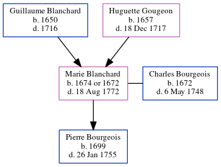

Marie Bourgeois (née Blanchard) 1674 - 1772
[ Home ] | [ Calendar ] | [ Surnames Index ] | [ Census Index ] | [ Family History ]The child of Guillaume Blanchard and Huguette Gougeon, Marie Blanchard, the 8 times great-grandmother of Michele Copp (née Phillips), was born in Port Royal, , Nova Scotia, Canada on Jan 1, 16741,2,3 and married Charles Bourgeois (with whom she had 1 child, Pierre) in 16924.
She died on Aug 18, 1772 in Beaubassin, Acadia, Nova Scotia, Canada.
Parents
- Guillaume was born in 1650
- Huguette was born in 1657
Children
- Pierre was born in 1699
Citations
- Family Data Collection - Births Online publication - Provo, UT, USA: The Generations Network, Inc., 2001.
- Family Data Collection - Individual Records Online publication - Provo, UT, USA: The Generations Network, Inc., 2000.
- U.S. and International Marriage Records, 1560-1900 Online publication - Provo, UT, USA: The Generations Network, Inc., 2004.Original data - This unique collection of records was extracted from a variety of sources including family group sheets and electronic databases. Originally, the information was deriv
- U.S. and International Marriage Records, 1560-1900 Online publication - Provo, UT, USA: The Generations Network, Inc., 2004.Original data - This unique collection of records was extracted from a variety of sources including family group sheets and electronic databases. Originally, the information was deriv
Family Tree
Generated by ged2site. Last updated on Jun 6, 2024